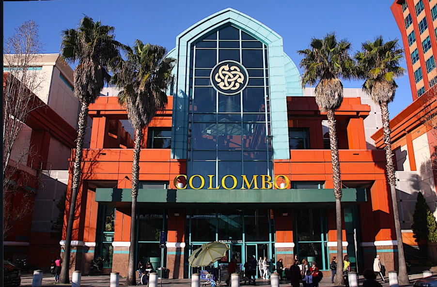
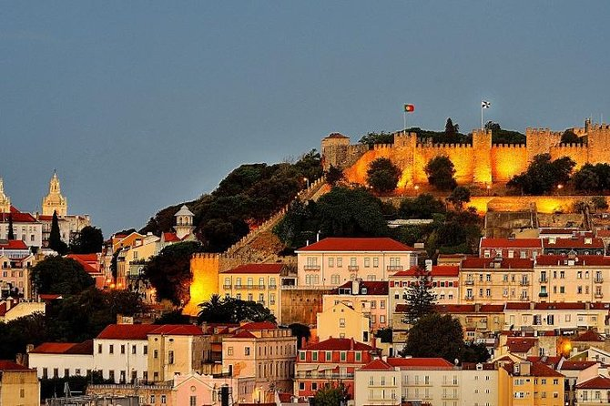
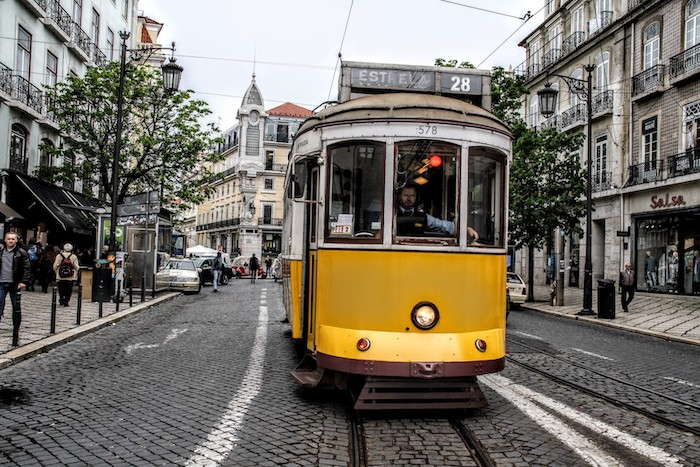
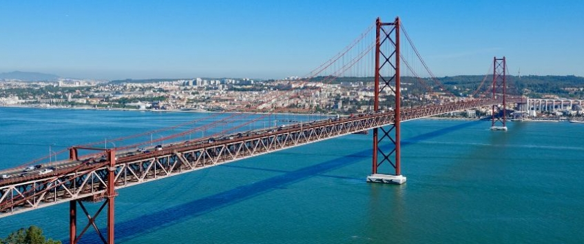
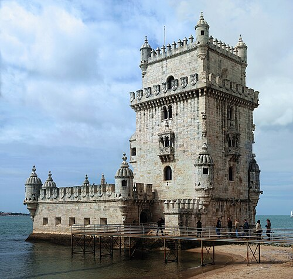

Roteiro Turístico de Lisboa

Marquês de Pombal/Colombo
1 de Abril - Quarta-feira

Passear por Alfama
2 de Abril - Quinta-feira
Visitar a Chará
3 de Abril - Sexta-feira
Visitar o Irmão Josemar
4 de Abril - Sábado
Visitar a Família Brito
5 de Abril - Domingo
Ir ao Betel
6 de Abril - Segunda-feira
Ir ao Zoológico
7 de Abril - Terça-feira
Oceanário e Teleférico
8 de Abril - Quarta-feira

Elétrico 28 e Rossio
9 de Abril - Quinta-feira

Andar pelo rio Tejo
10 de Abril - Sexta-feira

Torres de Belém
11 de Abril - Sábado
Fazer últimas compras
12 de Abril - Domingo
Arrumar as coisas
13 de Abril - Segunda-feira